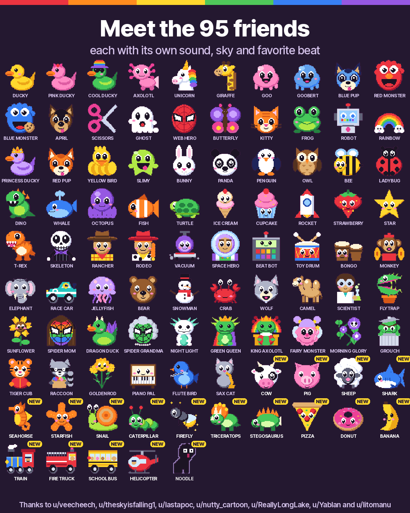

Rainbow mode
A music toy for little hands. It's free firmware that turns the M-VAVE FM-1 synth into something a young kid can play.
Heads up: the FM-1 installer still has the last version while we check the new one. The browser version has everything.
No FM-1? You can still play. Use the keys on the screen or your computer keyboard.
Download the video (90 seconds) if you want to share it.
What it feels like
- Every key shows its note, big and in its own color, like the bells in a music class. C is red, D is orange, E yellow, F green, G teal, A purple and B pink.
- There are 94 friends, and each one has its own picture, sound, sky and favorite beat. Ducks, a unicorn, a T-Rex, a fire truck with a siren, a piano that plays a real piano recording. Twelve of them came straight from a kid's imagination, like Spider Mom and Dragon Duck.
- 21 beats, from Disco and Reggae to Lofi, Acid and a real drum break. The bass line always fits whatever keys get pressed.
- The knobs make the friend big or small, turn day into night, add an echo and make everything wiggle. The top buttons are sound tricks like hiccup, backwards and freeze.
- The ALGORITHM dial changes how the keys play. One key can play a whole chord. The keys can strum like an Omnichord. Or the black keys hold chords while the white keys play the tune.
- There are games, too. GUESS is an ear game. FOLLOW lights the next key of 17 old songs. CHORDS teaches chords, from a first C to lofi sevenths. In COPY ME the friend plays a pattern and your kid plays it back.
- Every game won is a star, and stars open secrets. Ten stars gets a new hat. At 25 the northern lights come out.
- SAVE opens a big staff for writing songs, Mario Paint style. Each key puts a friend on the staff, PLAY sings it back, and it's still there tomorrow. Play along while it loops to add more.
- A music staff drops in as you play and writes each note in its color. Hold a key longer and the note gets longer, so a quick tap is a sixteenth and a long press is a whole note.
- There are 15 skies and ten hats. The hello can greet your kid by name. Grown-ups can set a volume limit for small ears.
- A few friends look a bit like TV and film characters. If you'd rather not have that, hold HOME for a second, then turn PRESETS left. They swap for original friends with the same sounds.
On the FM-1's screen

HelloA greeting every time it starts

A color for every notePress a key, see its letter

94 friendsTurn PRESETS to meet them

21 beatsPress PLAY, and the friend dances

Sound tricksTap a top button: GIANT

Day to nightA knob changes the sky and the sound

Notes, written downIn color, and as long as they are held

Write a songPress SAVE, then the keys

A volume for grown-upsHold HOME, press OCT- or OCT+
Meet the friends

Try it
In your browser
The same firmware, right in your browser. It works on computers, phones and tablets.
Open the demo Turn your sound on. You might need to tap once to get it going.On an M-VAVE FM-1
Plug it in with USB and press Install. It takes about a minute.
Open the installer You'll need Chrome or Edge on a computer or an Android phone, and a USB cable. Safari and iPhones can't do it.Say thanks
Rainbow mode is free and always will be. If it's brought some joy to your house, you can leave a tip. Please give Felucca a star too, since Rainbow mode is built on it.
Is it safe? Can I go back?
Yes. The installer page has a "Return to official V15" section. You grab the official file from M-VAVE's website, and the installer backs up your FM-1 before it switches back. Installing firmware is always at your own risk. This is a fan project. M-VAVE didn't make it and doesn't endorse it.
How do I leave Rainbow mode?
Hold HOME and SAVE together for 3 seconds. You get the full Felucca synth, with your last session right where you left it. Rainbow mode comes back the next time the FM-1 is switched on.
Thank you
These ideas came from people on r/MVaveFM1.
- u/veecheech suggested the T-Rex, Skeleton, Rancher, Rodeo, Vacuum and Space Hero, and the Omnichord-style STRUM.
- u/theskyisfalling1 asked for note lengths on the staff, so kids pick up rhythm too.
- u/lastapoc wanted a Mario Paint style song maker. That became WRITE.
- u/nutty_cartoon came up with chord names, the GUESS ear game and FOLLOW.
- u/Yablan asked for chord lessons. That became CHORDS.
- u/litomanu wanted 303 acid sounds. Now there's the Scientist, the Flytrap, the Sunflower and the ACID beat.
- u/ReallyLongLake asked for a switch that swaps the look-alike friends for original ones.
Got an idea for a friend, a sound or a game? Tell us on r/MVaveFM1. Everyone is listed in CREDITS.md.